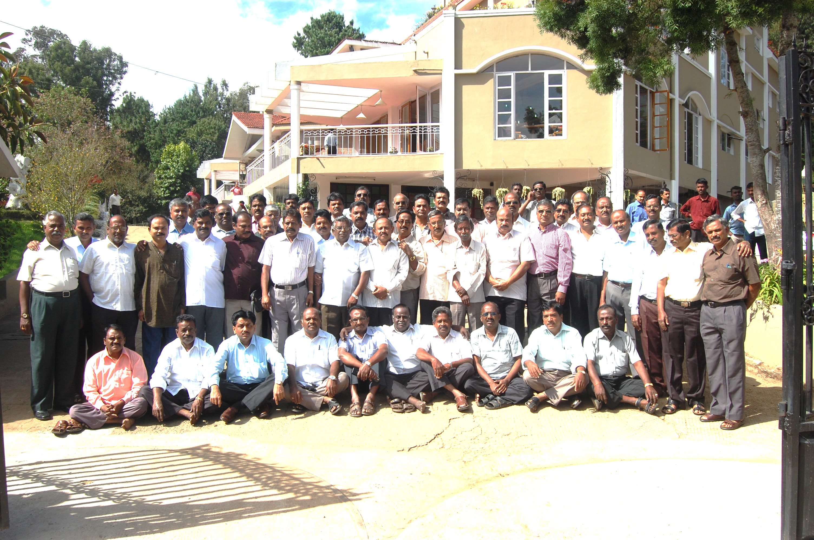
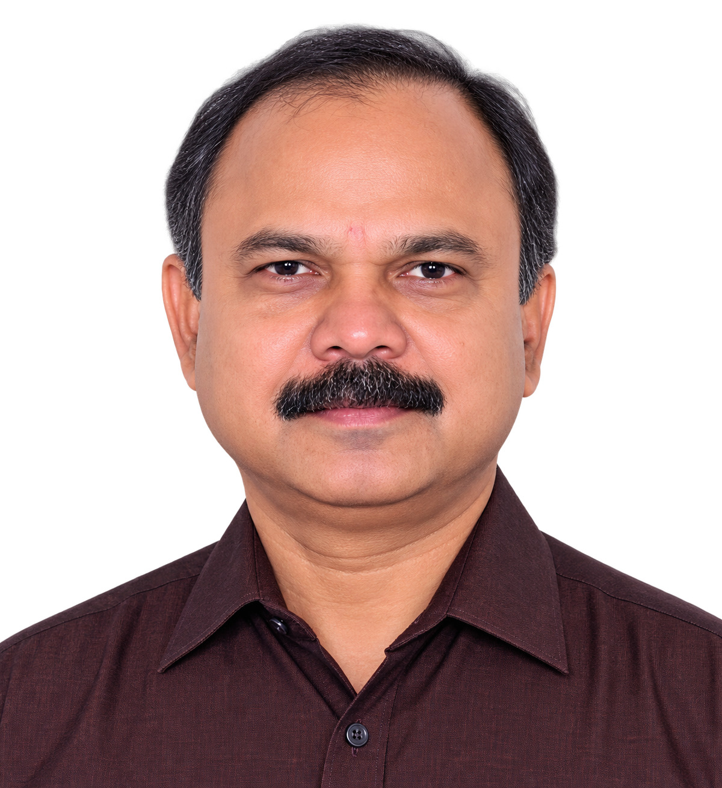
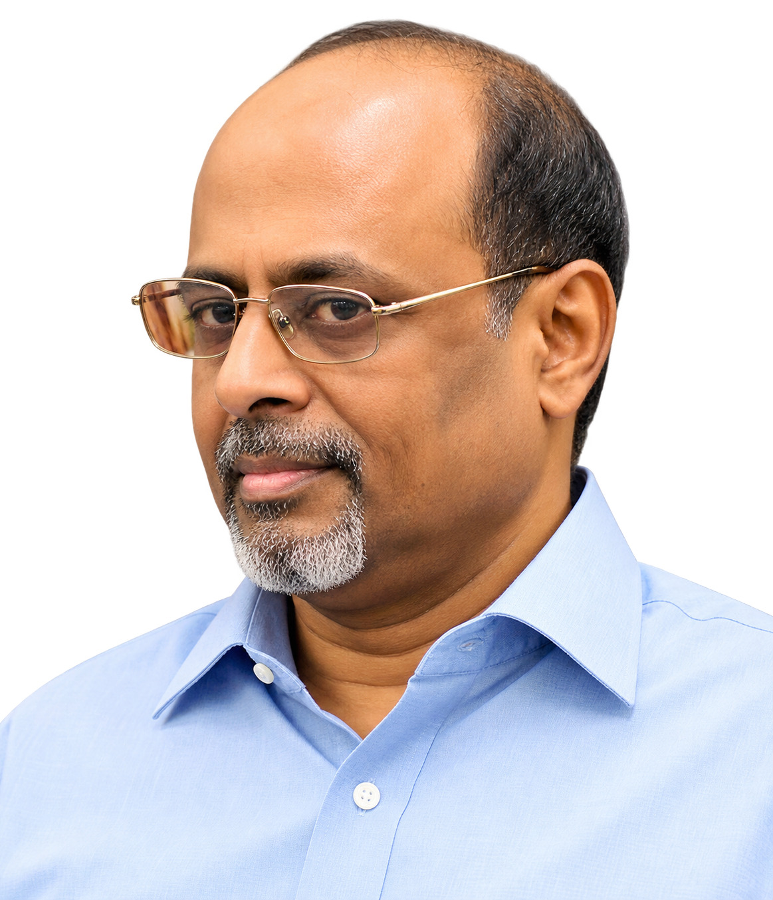
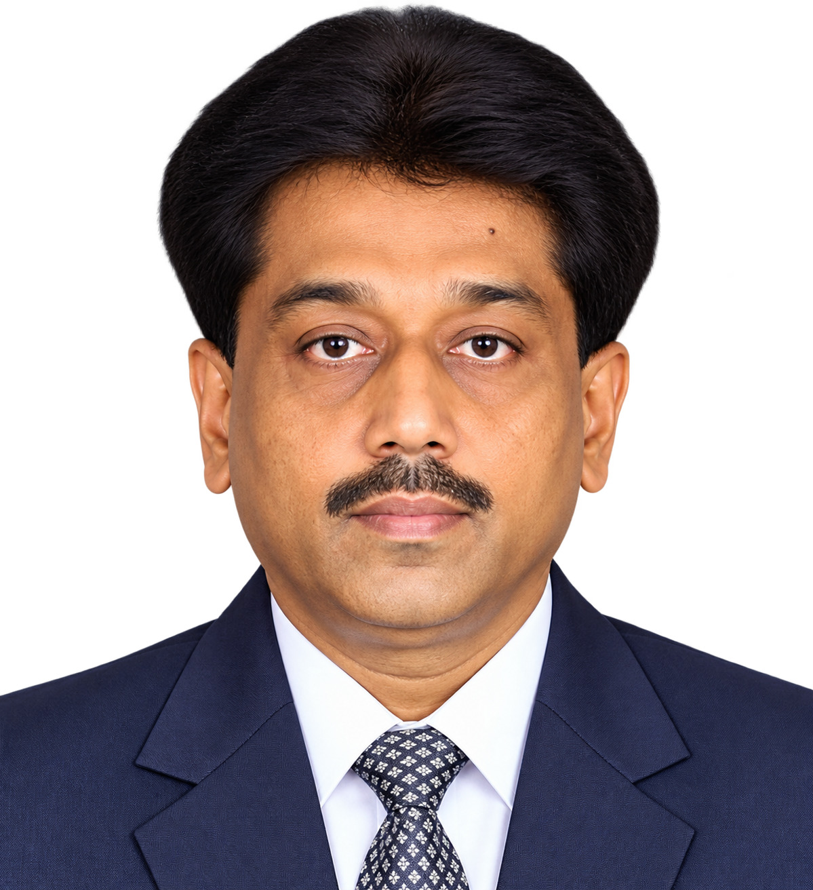
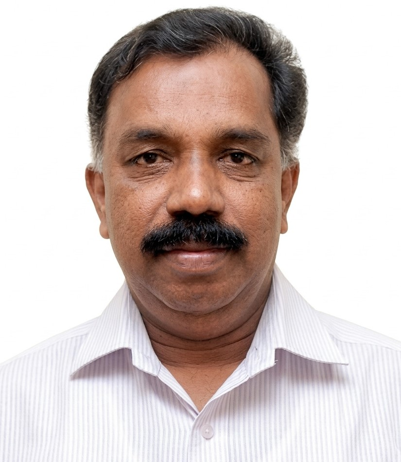

Thirty-Five Years Together: MVC 1975 Batch Kodaikanal Reunion
The Madras Veterinary College 1975 Batch reunited at Kodaikanal to commemorate thirty-five years of friendship, shared learning and professional service.
The reunion photograph includes batchmates who served in TTPA, government departments and other organisations. The portraits below identify the TTPA members featured in the group photograph.
TTPA Members in This Reunion Photograph

Dr. V. Balakrishnan

Dr. R. Jayaprakash

Dr. K. Dushyanthan

Dr. A. P. Nambi

Dr. R. C. Rajasundram

Late Dr. Saravanabava